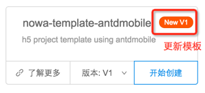

官方脚手架
目前官方脚手架一共有4种，'salt' & 'uxcore' & 'antdmobile' & 'dingyou'。
官方脚手架有版本控制，即版本选择。版本号分别对应脚手架在 github 上的不同分支。
官方脚手架有更新的话，会出现红色的 'new' 按钮。

如何升级到官方脚手架
如果用户的远程脚手架希望分享出来给大家使用，可以通过如下方式成为官方脚手架。
- 请测试脚手架可用
请使用工具的 '自定义模板' -> '远程模板' 添加该脚手架。然后使用该脚手架进行创建项目。当改项目可以正常运行和打包的时候，说明该脚手架可用。
请注册 npm 账号
请进入脚手架文件夹，通过
npm init创建 package.json请注意，脚手架名字不要超过20个字符，必须填写 'description'，不超过50个字符。必须填写 'homepage', 用作'了解详情'的链接使用
请使用 npm 的 tag 管理模块提交该脚手架
请使用v_1 作为 tag 名字，如果脚手架有多个版本(对应 github 上的分支)，请使用逐级递增数字位，比如 v_2, v_3 ...
提交命令如下：
npm publish --tag v_1
- 请提 issue 说明你要提交脚手架，笔者会帮你放到工具里面 (^-^)